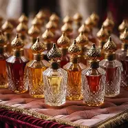

Acerca de mí
¡Hola! Soy Mauro Viotto, estudiante de la Licenciatura en Gestión de las Tecnologías de la Información en la UADE. Siempre tuve una fuerte inclinación por el mundo digital, la innovación y cómo la tecnología impacta la vida cotidiana. Este blog nace de esa curiosidad, combinada con una pasión más personal: los perfumes árabes.
¿Por qué elegí este tema?
Los perfumes árabes captaron mi atención debido a su historia milenaria y su personalidad intensa. Son fragancias con identidad, cultura y tradición. Además, en los últimos años explotaron en popularidad gracias a TikTok y otras redes, lo cual los volvió un fenómeno global.
Me interesó explorar esta tendencia desde una perspectiva cultural, económica y social, y transformarla en un proyecto digital propio que combine mis estudios, mi creatividad y un tema que realmente disfruto investigar.
¿Qué vas a encontrar en este blog?
- Información detallada sobre la historia del perfume árabe
- Tendencias virales y el impacto de TikTok
- Recomendaciones y guías para elegir fragancias
- Análisis del mercado argentino
- Reseñas de perfumes reconocidos
Mi objetivo con este proyecto
Quiero crear un espacio que mezcle información confiable, análisis profundo y un enfoque moderno sobre una industria que sigue creciendo. Además, este blog forma parte de mi camino académico, ya que me permite aplicar conocimientos de diseño web, contenido digital y comunicación visual.

Un poco más sobre mí
Además de la tecnología y los perfumes, disfruto mucho del básquet, la música y los proyectos creativos. Vivo en Martínez, donde equilibro mis estudios con mis hobbies y mis intereses personales. Este blog es una forma de compartir algo que me apasiona y, al mismo tiempo, seguir aprendiendo.
Gracias por pasar por acá. ¡Espero que disfrutes del contenido tanto como yo disfruto creándolo!
← Volver al inicio